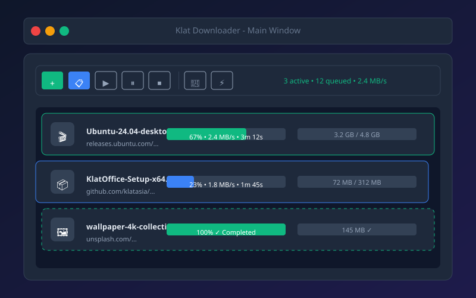
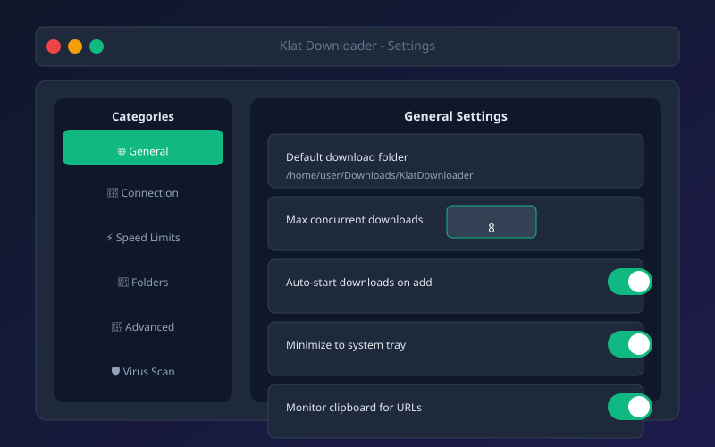

Multi-Threaded Downloads
Split files into up to 64 segments for maximum speed. Dynamic segment allocation adapts to network conditions.
Fast and stable download manager supporting HTTP/HTTPS/FTP, BitTorrent, and video streaming sites. Features: multi-threaded downloads, resume capability, scheduler, bandwidth limiter, browser integration, clipboard monitoring, virus scanning. Free on Windows & Linux.
Split files into up to 64 segments for maximum speed. Dynamic segment allocation adapts to network conditions.
Automatic resume on connection loss, power failure, or system crash. Checksum verification ensures file integrity.
Full BitTorrent client built-in. Magnet links, DHT, PEX, encryption, selective file download, sequential download for media.
Queue downloads for off-peak hours. Start/stop based on time, network type, battery level, or custom triggers.
Global and per-download speed limits. Schedule limits (unlimited at night, 500 KB/s during work hours).
Chrome, Firefox, Edge extensions. Right-click → "Download with Klat". Auto-intercept downloads.
Auto-detect URLs in clipboard. Smart filtering for video/audio/page links. One-click add to queue.
Integrate with Windows Defender, ClamAV, or VirusTotal API. Auto-scan completed downloads. Quarantine suspicious files.
Download from YouTube, Vimeo, Dailymotion, Twitch, Twitter, Instagram, TikTok, and 1000+ sites via yt-dlp backend.
HTTP/HTTPS, FTP/FTPS, SFTP, BitTorrent, Metalink, Magnet links. Proxy support (HTTP, SOCKS4/5).
Custom headers, cookies, auth, user-agent. Post-download actions (run script, extract, move). Categories & tags.
Minimize to tray. Desktop notifications on completion. Speed graph in tray tooltip. Boss key support.



ISO images, game installers, datasets. Multi-threading maximizes your bandwidth. Resume survives any interruption.
Download from 1000+ sites. Batch download playlists/channels. Auto-organize by creator, date, quality.
Lightweight BitTorrent client. Selective file download, sequential for streaming, RSS auto-download.
SFTP/FTP support with key auth. Mirror directories. Sync with remote servers. Bandwidth scheduling.
HTTP/1.1, HTTP/2, HTTP/3 (QUIC). TLS 1.3. Chunked encoding. Redirect handling. Custom headers.
Passive/active mode. Implicit/explicit TLS. Site-to-site (FXP). MLSD/MLST. UTF-8 support.
SSH2 protocol. Key-based auth (Ed25519, RSA, ECDSA). Agent forwarding. SCP fallback.
DHT, PEX, LSD. Encryption (MSE/PE). Magnet links. v2 torrents. Web seeds. Super-seeding.
Metalink 3.0/4.0. Multiple mirrors. PGP signatures. Chunk checksums. Dynamic mirror selection.
HTTP/HTTPS proxy. SOCKS4/4a/5. Proxy chains. PAC/WPAD. Per-download proxy. Auth support.
v4.3.0 • 42 MB
v4.3.0 • 38 MB
Up to 64 segments per file. Default is 8. More segments = faster on high-latency connections, but diminishing returns after 16-32.
Yes! Paste any YouTube URL. Uses yt-dlp backend supporting 1000+ sites. Choose quality, format, audio-only. Subtitles included.
Yes. Add tracker cookies in settings. Supports passkey in URL. Announce interval respect. DHT/PEX can be disabled per-torrent.
Enable in Settings → General. Klat monitors clipboard for URLs. Smart filter detects video/audio/page links. Notification asks to add to queue.
Yes! Settings → Scheduler → Speed Limits. Example: 100 KB/s 9 AM - 6 PM, unlimited 6 PM - 9 AM. Per-download or global.
Yes. All features work. Settings stored in app folder. Browser extensions need separate install. No admin rights needed.